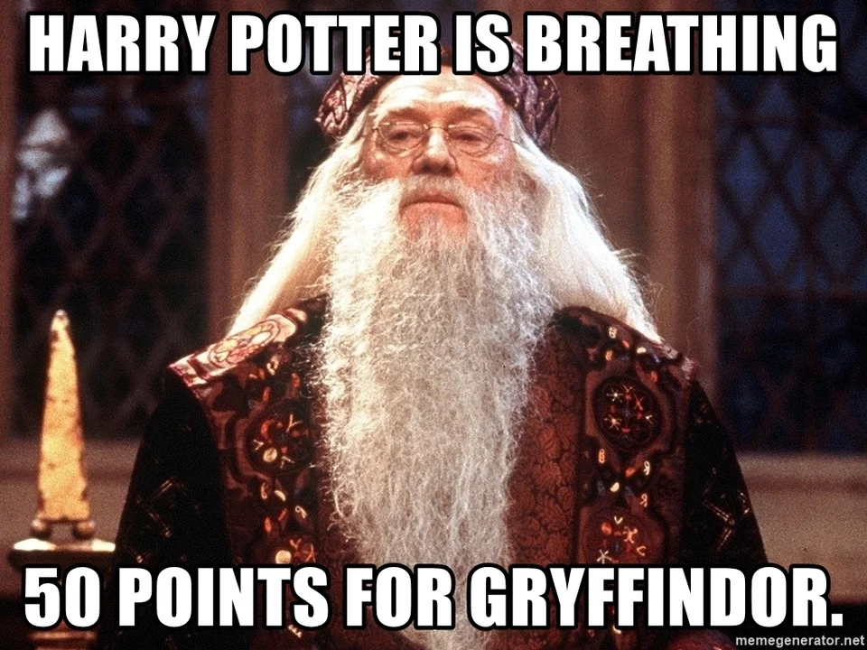

Giriş¶
Tembeller için programlama (TİP), anlaşılabilir problemler ile python kodlama öğretmeyi hedefler.
TİP bir yaşam biçimi, bir felsefedir.
Tip
15 dakikada yapabileceğiniz bir işi otomatikleştirmek için 45 dakika mı harcıyorsunuz? Siz bir TİPsiniz.
Bilgisayar nedir?¶
Bilgisayar, kendisine komuta edilmiş aritmetik ya da mantıksal işlemleri yapabilen bir makinedir.
Bilgisayar’ı tam olarak anlamak için donanım ve yazılımın ne olduğunu anlamak gerek.
Donanım¶
Bilgisayarı oluşturan fiziksel parçaların tamamıdır. Bunlara
işlemci
hafıza
veri depolama birimleri
ekran
fare
klavye
örnek olabilir.
Yazılım¶
Donanım ile insan arasında kalan tercüman olarak algılanabilir.
Örneğin, depolama birimi olan hard disk’te bir bilgiyi depolamak isterseniz, bu bilginin büyüklüğü, içeriği, türü vb özelliklerini bilmeniz, daha sonra hard disk üzerindeki boş olarak işaretlenmiş sektörleri tespit edip söz konusu bilgiyi o sektörlere yazdıktan sonra, kaydetmiş olduğunuz bilginin hangi sektörlere yayıldığını bildiren index bilgisini girmeniz gerek.
Bu işlemleri, işlemciye yaptırmak talimatlar ile gerçekleşir. Bu talimatlar ise Makine Dili (Machine Code) ile
verilir.
Maline dili şuna benzer:
001000 00001 00010 0000000101011110
080102015E
Gördüğünüz değerler işlemciye bir şeyler yaptırıyor. Fakat görüdüğünüzden de anlaşılacağı üzere bizim bunun bir bakışta
(2. bakıştan da pek emin değilim) anlamamız pek olası değil. Bu talimatların daha anlaşılabilir olması adına
Tercümanlar kullanırız. Bu tercümanlar, insan dilini, makine diline dönüştürür. Bunlar Kabuklar,
Betik/Programlama dilleri’dir.
Kullanıcı ile Donanım arasındaki haberleşme¶
Bir kullanıcı donanıma bir şeyler yaptırmak istediğinde bunu çok farklı şekilde yapabilir. Anlaşılabilir olması için örnekle açıklayalım.
Kullanıcı a adlı dosyı b olarak yeniden adlandırmak istiyor. Bunun için nasıl yollar izlenebilir?
Makine dili ile,
adosyasının diskte bulunduğu bölgeyi okuyup… Yok ya anlatırken sıkıldım. Geç!İşetim sisteminde bulunan yeniden adlandırma işi yapabilen programa başvurabiliriz.
renveyamv. Bunun için terminal açıpmv a byazarız. Yeniden adlandırma işlemi tamamlanmış olur. Fena değil. Ama ben tembelim. Daha kolayı?Arayüzden dosyaya sağtıkla, açılan meünden
yeniden adlandır’a tıkla. Dosya adını yaz enter’a bas. Daha iyi.Pythonterminali aç.shutilkütüphanesini içe aktar.copyfilemetodunu kullanarak, kaynak ve hedef yolları sağla. Kodu çalıştır.
Dördü geç!
İkinci adımda bir program kullandık. O program, işletim sistemi çekirdeğine yeniden adlandırma işlemini bildirdi. İşletim sistemi çekirdeği ise donanımla konuşup işi yaptı.
Üçüncü adımda ise yeniden adlandırma yapan program ile kullanıcı arasına bir arayüz yerleştirdik. İşi daha da kolaylaştırdık.
Peki biz yeniden adlandırma kodunu kendimiz yazsaydı ne olurdu? Kodu hangi dilde yazdığımıza bağlı olarak değişir ama aşağı yukarı ayni şeyler gerçekleşir.
Kod ile donanım arasındaki haberleşme Fig. 1’de verilmiştir.

Fig. 1 Kod ile donanım iletişimi¶
Kod¶
Kod neydi? Kod iyilikti, dostluktu, kod emekti. Başlarsam bir daha kurtulamam…
Kod, bir programlama veya betik (script) dili için hazırlanmış, talimatlar (metin) dizisidir. Söz konusu metin (ki bu metin yazılışı itibariyle insan diline daha yakındır) derkeyici veya yorumlayıcı yardımyla işleme dönüşür.
Peki nedir programlama veya betik dili? Prensipte benzer işleri yaparlar fakat art alanda çok farklı yollar izlerler.
Dil seviyesi¶
Programlamada dil seviyesi diye bir kavram vardır. Bir programlama veya betik dilininin seviyesi insan diline yakınlığıyla (ve diğer parametrelerle) ölçülür.
Yüksek seviye bir dil: İnsan diline daha yakın
Düşük seviye vir dil: Makine diline daha yakın
anlamına gelir.
Seviyelerin bir rankı yoktur. Göreli olarak ifade edilir. Örneğin:
Python, C++'a göre daha yüksek seviye bir dildir.
Programlama dili¶
Bir programlama dili aslında bir derleyicidir. Bu derleyicinin yazım kuralları vardır. İçinde barındırdığı araçlar vardır.
Çalışma şekli ise şöyledir:
Size dikte edilen yazım kurallarına sadık kalarak bir takım talimatlar yazarsınız.
Yazdığınız talimatları bir yalın metin (txt gibi) belgesine kaydedersiniz.
Derleyiciye bu metin belgesini verirsiniz.
Derleyici ise metni okur, hata görmez ise, size çalıştırabileceğiniz bir dosya sunar. O dosyayı kullanarak talimat listesinde verdiğiniz işlemleri makineye yaptırabileceksiniz.
Derleyiciye verdiğiniz metin kaynak kod (source code), ortayaçıkan çalıştırılabilir dosya ise
program’dır.
Buradaki anahtar kelime derlemek ve derlemenin sonucunda çalıştırılabilir dosyanın oluşmasıdır.
Derlediğiniz kodun çıktısı olan program işletim sistemi çekirdeği ile konuşur. Dolayısıyla bu programı başkasıyla paylaşırsanız insanlara yardımcı olabilirsiniz.
Note
Kodu hangi işletim sisteminde derlediyseniz, oluşan program söz konusu işletim sisteminde çalışır.
Windows’da derkedim, Linux’ta çalışmadı. E çalışmaz tabii.
Programınızı kullanacak insanların derleyiciye ihtiyacı olmaz. Programı çalıştırır.
Betik dili¶
Betik dili bir yorumlayıcıdır. Programlama dilinde olduğu gibi betik dilinde de yazım kuralları ve içinde barındırdığı araçlar vardır.
Çalıştırma şekli ise şöyledir:
Size dikte edilen yazım kurallarına sadık kalarak bir takım talimatlar yazarsınız.
Yazdığınız talimatları bir yalın metin (txt gibi) belgesine kaydedersiniz.
Yorumlayıcıya bu metin belgesini verirsiniz.
Yorumlayıcı ise bu işlemleri sırasıyla gerçekleştirir.
Farkı hissettiniz mi? Çalıştırılabilir dosya oluşmadı. Talimatlar direkt gerçekleşti.
Note
Betik dili derleme yapmaz demek doğru olmayabilir. Derleme işlemi ve çalıştırma işlemini aynı anda yapar…
Betik dillerinde program dosyası oluşmaz. Eğer yazdığınızı biriyle paylaşmak istersesniz, kaynak kodu paylaşmanız gerekecek.
Herkes ne kadar berbat kod yazdığınızı görecek.

Ayrıca yazdığınız kodun yorumlanması için yorumlayıcıya gerek var. Python’da yazdığınız kodu başkası çalıştıracaksa, Python’ı kurması gerekiyor.
Betik vs Programlama¶
Haydi programlama ve betiği karşılaştıralım. Bu sırada puan da verelim.
Round: Programlama dilinde kaynak kodu gizleyebilirsiniz. Böylece insanlar yazdığınız şiirimsi içerikten mahrum kalabilir. Betik dilinde kaynağı paylaşmak zorundasınız.(Buradan kimseye puan çıkmaz)
Programlama: 0
Betik: 0
Round: Programlama dilinde oluşturduğunuz programı paylaşırsınız. Tek başına çalışır. Betik dilinde kodu paylaşırsınız ve yorumlayıcıya ihtiyaç duyulur.
Programlama: 1
Betik: 0
Round: Programlama dilinde direkt işletim sistemi çekirği ile muhattap olduğunuzdan teoride, betik diline göre çok daha hızlıdır.
Programlama: 2
Betik: 0
Round: Programlama dilleri bir defa derlenir, sonra defalarca çalıştırılabilir. Betik dillerinde her çalıştırmada kod yorumlanmak zorunda.
Programlama: 3
Betik: 0
Round: Programlama dilleri donanımın tüm kaynaklarından yararlanabilir, betik dillerinde ise bu kaynaklar çok daha kısıtlıdır.
Programlama: 4
Betik: 0
Round: Programlama dillerinin kullanımı daha zordur ve maliyeti daha fazladır. Betik dillerinde ise kullanım daha kolay ve maliyeti daha azdır.
Programlama: 4
Betik: 65535

{kind=link}
Python¶
Aslında yaptığımız tanımlara göre Python bir betik olmalı, fakat prensipte Python bir programlama dilidir.
Biz yinede betikmiş gibi davranacağız.
Python, nesne yönelimli, yorumlamalı, birimsel (modüler) ve etkileşimli yüksek seviyeli bir programlama dilidir. Wikipedia
Python kodu yalın metinde tutulur. Fakat dosya uzantısı olarak py kullanılır.
Buraya kadar geldiyseniz sizi tebrik ederim.